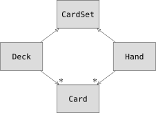

Subtyping
In the previous chapter we introduced the multiple dispatch mechanism and polymorphic methods. Not specifying the type of the arguments results in a method that can be called with arguments of any type. Specifying a subset of allowed types in the signature of a method is a logical next step.
In this chapter I demonstrate subtyping using types that represent playing cards, decks of cards, and poker hands.
If you don’t play poker, you can read about it at http://en.wikipedia.org/wiki/Poker, but you don’t have to; I’ll tell you what you need to know for the exercises.
Cards
There are fifty-two cards in a deck, each of which belongs to one of four suits and one of thirteen ranks. The suits are Spades (♠), Hearts (♥), Diamonds (♦), and Clubs (♣). The ranks are Ace (A), 2, 3, 4, 5, 6, 7, 8, 9, 10, Jack (J), Queen (Q), and King (K). Depending on the game that you are playing, an Ace may be higher than King or lower than 2.
If we want to define a new object to represent a playing card, it is obvious what the attributes should be: rank and suit. It is not as obvious what type the attributes should be. One possibility is to use strings containing words like "Spade" for suits and "Queen" for ranks. One problem with this implementation is that it would not be easy to compare cards to see which had a higher rank or suit.
An alternative is to use integers to encode the ranks and suits. In this context, “encode” means that we are going to define a mapping between numbers and suits, or between numbers and ranks. This kind of encoding is not meant to be a secret (that would be “encryption”).
For example, this table shows the suits and the corresponding integer codes:
♠$\mapsto$ 4♥$\mapsto$ 3♦$\mapsto$ 2♣$\mapsto$ 1
This code makes it easy to compare cards; because higher suits map to higher numbers, we can compare suits by comparing their codes.
I am using the $\mapsto$ symbol to make it clear that these mappings are not part of the Julia program. They are part of the program design, but they don’t appear explicitly in the code.
The struct definition for Card looks like this:
struct Card
suit :: Int64
rank :: Int64
function Card(suit::Int64, rank::Int64)
@assert(1 ≤ suit ≤ 4, "suit is between 1 and 4")
@assert(1 ≤ rank ≤ 13, "rank is between 1 and 13")
new(suit, rank)
end
endTo create a Card, you call Card with the suit and rank of the card you want:
julia> queen_of_diamonds = Card(2, 12)
ThinkJulia.Card(2, 12)Global Variables
In order to print Card objects in a way that people can easily read, we need a mapping from the integer codes to the corresponding ranks and suits. A natural way to do that is with arrays of strings:
const suit_names = ["♣", "♦", "♥", "♠"]
const rank_names = ["A", "2", "3", "4", "5", "6", "7", "8", "9", "10", "J", "Q", "K"]Variables like suit_names and rank_names, which are defined outside of a type definition or of any method, are called global variables. The const declaration means that the variable can only be assigned once. This solves the performance problem of global variables.
Now we can implement an appropriate show method:
function Base.show(io::IO, card::Card)
print(io, rank_names[card.rank], suit_names[card.suit])
endThe expression rank_names[car.rank] means “use the field rank from the object card as an index into the array rank_names, and select the appropriate string.”
With the methods we have so far, we can create and print cards:
julia> Card(3, 11)
J♥Comparing Cards
For built-in types, there are relational operators (<, >, ==, etc.) that compare values and determine when one is greater than, less than, or equal to another. For programmer-defined types, we can override the behavior of the built-in operators by providing a method named: Base.isless.
The correct ordering for cards is not obvious. For example, which is better, the 3 of Clubs or the 2 of Diamonds? One has a higher rank, but the other has a higher suit. In order to compare cards, you have to decide whether rank or suit is more important.
The answer might depend on what game you are playing, but to keep things simple, we’ll make the arbitrary choice that suit is more important, so all of the Spades outrank all of the Diamonds, and so on.
With that decided, we can write Base.isless:
function Base.isless(c1::Card, c2::Card)
isless((c1.suit, c1.rank), (c2.suit, c2.rank))
endAs an exercise, write a Base.isless method for mytime objects. You can use tuple comparison, but you also might consider comparing integers.
Unit Testing
Unit testing is a way to see if your code is correct by checking that the results are what you expect. It can be helpful to ensure your code still works after you make changes, and can be used when developing as a way of specifying the behaviors your code should have when complete.
Simple unit testing can be performed with the @test macros:
julia> using Test
julia> @test isless(Card(1, 4), Card(2, 4))
Test Passed
julia> @test isless(Card(1, 3), Card(1, 4))
Test Passed@test returns a Test Passed if the expression following it is true, a Test Failed if it is false, and an Error Result if it could not be evaluated.
Decks
Now that we have Cards, the next step is to define Decks. Since a deck is made up of cards, it is natural for each Deck to contain an array of cards as an attribute.
The following is a struct definition for Deck. The constructor creates the fields cards and generates the standard set of fifty-two cards:
struct Deck
cards :: Array{Card, 1}
function Deck()
deck = new(Card[])
for suit in 1:4
for rank in 1:13
push!(deck.cards, Card(suit, rank))
end
end
deck
end
endThe easiest way to populate the deck is with a nested loop. The outer loop enumerates the suits from 1 to 4. The inner loop enumerates the ranks from 1 to 13. Each iteration creates a new Card with the current suit and rank, and pushes it to deck.cards.
Here is a Base.show method for Deck:
function Base.show(io::IO, deck::Deck)
for card in deck.cards
print(io, card, " ")
end
println()
endHere’s what the result looks like:
julia> Deck()
A♣ 2♣ 3♣ 4♣ 5♣ 6♣ 7♣ 8♣ 9♣ 10♣ J♣ Q♣ K♣ A♦ 2♦ 3♦ 4♦ 5♦ 6♦ 7♦ 8♦ 9♦ 10♦ J♦ Q♦ K♦ A♥ 2♥ 3♥ 4♥ 5♥ 6♥ 7♥ 8♥ 9♥ 10♥ J♥ Q♥ K♥ A♠ 2♠ 3♠ 4♠ 5♠ 6♠ 7♠ 8♠ 9♠ 10♠ J♠ Q♠ K♠Add, Remove, Shuffle and Sort
To deal cards, we would like a function that removes a card from the deck and returns it. The function pop! provides a convenient way to do that:
function Base.pop!(deck::Deck)
pop!(deck.cards)
endSince pop! removes the last card in the array, we are dealing from the bottom of the deck.
To add a card, we can use the function push!:
function Base.push!(deck::Deck, card::Card)
push!(deck.cards, card)
nothing
endA method like this that uses another method without doing much work is sometimes called a veneer. The metaphor comes from woodworking, where a veneer is a thin layer of good quality wood glued to the surface of a cheaper piece of wood to improve the appearance.
In this case addcard is a “thin” method that expresses an array operation in terms appropriate for decks. It improves the appearance, or interface, of the implementation.
As another example, we can write a method named shuffledeck! using the function Random.shuffle!:
using Random
function Random.shuffle!(deck::Deck)
shuffle!(deck.cards)
nothing
endWrite a function named sortdeck! that uses the function sort! to sort the cards in a Deck. sort! uses the Base.isless method we defined to determine the order.
Abstract Types and Subtyping
We want a type to represent a “hand”, that is, the cards held by one player. A hand is similar to a deck: both are made up of a collection of cards, and both require operations like adding and removing cards.
A hand is also different from a deck; there are operations we want for hands that don’t make sense for a deck. For example, in poker we might compare two hands to see which one wins. In bridge, we might compute a score for a hand in order to make a bid.
So we need a way to group related concrete types. In Julia this is done by defining an abstract type that serves as a parent for both Deck and Hand. This is called subtyping
Let's call this abstract type CardSet:
abstract type CardSet endThe abstract type keyword introduces a new abstract type. The name can be optionally followed by <: and an already-existing abstract type, indicating that the newly declared abstract type is a subtype of this “parent” type.
When no supertype is given, the default supertype is Any – a predefined abstract type that all objects are instances of and all types are subtypes of.
We can now express that Deck is a descendant of CardSet:
struct Deck <: CardSet
cards :: Array{Card, 1}
function Deck()
deck = new(Card[])
for suit in 1:4
for rank in 1:13
push!(deck.cards, Card(suit, rank))
end
end
deck
end
endThe operator isa checks whether an object is of a given type:
julia> deck = Deck();
julia> deck isa CardSet
trueA hand is also a kind of CardSet:
struct Hand <: CardSet
cards :: Array{Card, 1}
label :: String
function Hand(label::String="")
new(Card[], label)
end
endInstead of populating the hand with 52 new cards, the constructor for Hand initializes cards with an empty array. An optional argument can be passed to the constructor giving a label to the Hand.
julia> hand = Hand("new hand")
julia> hand.cards
0-element Array{ThinkJulia.Card,1}Abstract Types and Functions
We can now express the common operations between Deck and Hand as functions having as argument CardSet:
function Base.show(io::IO, cs::CardSet)
for card in cs.cards
print(io, card, " ")
end
end
function Base.pop!(cs::CardSet)
pop!(cs.cards)
end
function Base.push!(cs::CardSet, card::Card)
push!(cs.cards, card)
nothing
endWe can use pop! and push! to deal a card:
julia> deck = Deck();
julia> shuffle!(deck)
WARNING: importing deprecated binding Base.shuffle! into ex-chap18.
WARNING: Base.shuffle! is deprecated: it has been moved to the standard library package `Random`.
Add `using Random` to your imports.
likely near /Users/ben/.julia/dev/ThinkJulia/docs/make.jl:4
julia> card = pop!(deck);
julia> push!(hand, card)
julia> hand
10♣A natural next step is to encapsulate this code in a function called move!:
function move!(cs1::CardSet, cs2::CardSet, n::Int)
@assert 1 ≤ n ≤ length(cs1.cards)
for i in 1:n
card = pop!(cs1)
push!(cs2, card)
end
nothing
endmove! takes three arguments, two cardset objects and the number of cards to deal. It modifies both cardset objects, and returns nothing.
In some games, cards are moved from one hand to another, or from a hand back to the deck. You can use move! for any of these operations: cs1 and cs2 can be either a Deck or a Hand.
Type Diagrams
So far we have seen stack diagrams, which show the state of a program, and object diagrams, which show the attributes of an object and their values. These diagrams represent a snapshot in the execution of a program, so they change as the program runs.
They are also highly detailed; for some purposes, too detailed. A type diagram is a more abstract representation of the structure of a program. Instead of showing individual objects, it shows types and the relationships between them.
There are several kinds of relationship between types:
Objects of a concrete type might contain references to objects of another type. For example, each Rectangle contains a reference to a Point, and each Deck contains references to an array of Cards. This kind of relationship is called HAS-A, as in, “a Rectangle has a Point.
One type might has supertype an abstract type. This relationship is called IS-A, as in, “a Hand is a kind of a CardSet.”
One type might depend on another in the sense that objects of one type take objects of the second type as parameters, or use objects of the second type as part of a computation. This kind of relationship is called a dependency.

The arrow with a hollow triangle head represents an IS-A relationship; in this case it indicates that Hand has as supertype CardSet.
The standard arrow head represents a HAS-A relationship; in this case a Deck has references to Card objects.
The star (*) near the arrow head is a multiplicity; it indicates how many Cards a Deck has. A multiplicity can be a simple number, like 52, a range, like 5:7 or a star, which indicates that a Deck can have any number of Cards.
There are no dependencies in this diagram. They would normally be shown with a dashed arrow. Or if there are a lot of dependencies, they are sometimes omitted.
A more detailed diagram might show that a Deck actually contains an array of Cards, but built-in types like array and dictionnaries are usually not included in type diagrams.
Debugging
Subtyping can make debugging difficult because when you call a function with an object as argument, it might be hard to figure out which method will be invoked.
Suppose you are writing a function that works with Hand objects. You would like it to work with all kinds of Hands, like PokerHands, BridgeHands, etc. If you invoke a method like sort!, you might get the one defined for an abstract type Hand, but if a method sort! with as argument any of the subtypes exists, you’ll get that version instead. This behavior is usually a good thing, but it can be confusing.
Any time you are unsure about the flow of execution through your program, the simplest solution is to add print statements at the beginning of the relevant methods. If shuffle! prints a message that says something like Running shuffle! Deck, then as the program runs it traces the flow of execution.
As an alternative, you can also use the InteractiveUtils.@which macro:
julia> using InteractiveUtils
julia> @which sort!(hand)
sort!(hand::ThinkJulia.Hand) in ThinkJulia at /Users/ben/.julia/dev/ThinkJulia/src/code/chap18.jl:75So the sort! method for hand is the one having as argument an object of type ThinkJulia.Hand.
Here’s a design suggestion: when you override a method, the interface of the new method should be the same as the old. It should take the same parameters, return the same type, and obey the same preconditions and postconditions. If you follow this rule, you will find that any function designed to work with an instance of a supertype, like an CardSet, will also work with instances of its subtypes Deck and Hand.
If you violate this rule, which is called the “Liskov substitution principle”, your code will collapse like (sorry) a house of cards.
Data Encapsulation
The previous chapters demonstrate a development plan we might call “type-oriented design”. We identified objects we needed—like Point, Rectangle and MyTime—and defined structs to represent them. In each case there is an obvious correspondence between the object and some entity in the real world (or at least a mathematical world).
But sometimes it is less obvious what objects you need and how they should interact. In that case you need a different development plan. In the same way that we discovered function interfaces by encapsulation and generalization, we can discover type interfaces by data encapsulation.
Markov analysis, from Section 13.8, provides a good example. If you download my code from https://github.com/BenLauwens/ThinkJulia.jl/blob/master/src/solutions/chap13.jl, you’ll see that it uses two global variables—suffixes and prefix—that are read and written from several functions.
suffixes = Dict()
prefix = []Because these variables are global, we can only run one analysis at a time. If we read two texts, their prefixes and suffixes would be added to the same data structures (which makes for some interesting generated text).
To run multiple analyses, and keep them separate, we can encapsulate the state of each analysis in an object. Here’s what that looks like:
struct Markov
order :: Int64
suffixes :: Dict{NTuple{String,}, Array{String, 1}}
prefix :: Array{String, 1}
function Markov(order::Int64=2)
new(order, Dict{String, Array{String, 1}}(), Array{String, 1}())
end
endNext, we transform the functions into methods. For example, here’s processword:
function processword(markov::Markov, word::String)
if length(markov.prefix) < markov.order
push!(markov.prefix, word)
return
end
get!(markov.suffixes, (markov.prefix...), Array{String, 1}())
push!(markov.suffixes[(markov.prefix...)], word)
pushfirst!(markov.prefix)
push!(markov.prefix, word)
endTransforming a program like this—changing the design without changing the behavior—is another example of refactoring (see Section 4.7).
This example suggests a development plan for designing types:
Start by writing functions that read and write global variables (when necessary).
Once you get the program working, look for associations between global variables and the functions that use them.
Encapsulate related variables as fields of a struct.
Transform the associated functions into methods with as argument objects of the new type.
As an exercise, download my Markov code from https://github.com/BenLauwens/ThinkJulia.jl/blob/master/src/solutions/chap13.jl, and follow the steps described above to encapsulate the global variables as attributes of a new struct called Markov.
Glossary
encode: To represent one set of values using another set of values by constructing a mapping between them.
global variable: A variable declared outside a function/method definition.
unit testing: Standardized way to test the correctness of code.
veneer: A method or function that provides a different interface to another function without doing much computation.
subtyping: The ability to define a hierarchy of related types.
abstract type: A type that can act as a parent for another type.
concrete type: A type that can be constructed.
subtype: A type that has as parent an abstract type.
supertype: An abstract type that is the parent of another type.
IS-A relationship: A relationship between a subtype and its supertype.
HAS-A relationship: A relationship between two types where instances of one type contain references to instances of the other.
dependency: A relationship between two types where instances of one type use instances of the other type, but do not store them as fields.
type diagram: A diagram that shows the types in a program and the relationships between them.
multiplicity: A notation in a class diagram that shows, for a HAS-A relationship, how many references there are to instances of another class.
data encapsulation: A program development plan that involves a prototype using global variables and a final version that makes the global variables into instance fields.
Exercises
Exercise 18-1
For the following program, draw a type diagram that shows these types and the relationships among them.
abstract type PingPongParent end
struct Ping <: PingPongParent
pong :: PingPongParent
end
struct Pong <: PingPongParent
pings :: Array{Ping, 1}
function Pong(pings=Array{Ping, 1}())
new(pings)
end
end
function addping(pong::Pong, ping::Ping)
push!(pong.pings, ping)
nothing
end
pong = Pong()
ping = Ping(pong)
addping(pong, ping)Exercise 18-2
Write a method called deal that takes three parameters, a deck, the number of hands and the number of cards per hand. It should create the appropriate number of Hand objects, deal the appropriate number of cards per hand, and return an array of Hands.
Exercise 18-3
The following are the possible hands in poker, in increasing order of value and decreasing order of probability:
pair: two cards with the same rank
two pair: two pairs of cards with the same rank
three of a kind: three cards with the same rank
straight: five cards with ranks in sequence (aces can be high or low, so Ace-2-3-4-5 is a straight and so is 10-Jack-Queen-King-Ace, but Queen-King-Ace-2-3 is not.)
flush: five cards with the same suit
full house: three cards with one rank, two cards with another
four of a kind: four cards with the same rank
straight flush: five cards in sequence (as defined above) and with the same suit
The goal of this exercise is to estimate the probability of drawing these various hands.
Add methods named
haspair,hastwopair, etc. that returntrueorfalseaccording to whether or not the hand meets the relevant criteria. Your code should work correctly for “hands” that contain any number of cards (although 5 and 7 are the most common sizes).Write a method named
classifythat figures out the highest-value classification for a hand and sets thelabelfield accordingly. For example, a 7-card hand might contain a flush and a pair; it should be labeled “flush”.When you are convinced that your classification methods are working, the next step is to estimate the probabilities of the various hands. Write a function that shuffles a deck of cards, divides it into hands, classifies the hands, and counts the number of times various classifications appear.
Print a table of the classifications and their probabilities. Run your program with larger and larger numbers of hands until the output values converge to a reasonable degree of accuracy. Compare your results to the values at http://en.wikipedia.org/wiki/Hand_rankings.